Galeri komponen template DEN
Beamer dan revealjs dengan tampilan master PowerPoint DEN
Krisna Gupta ![]()
Dewan Ekonomi Nasional
20 October 2026
Dua grafik berjudul, dengan catatan dan sumber
Rasio ULN terhadap PDB Indonesia
(Persen)
Perbandingan rasio ULN/PDB, Tw. II/2026
(Persen)

Catatan: Angka ilustrasi; posisi per 30 Juni 2026.
Sumber: angka ilustrasi, diolah
Grafik dan card berikon
Debt Servicing Ratio Tier-1 dan Tier-2
(persen)

Rasio ULN terhadap PDB Indonesia
(persen)


Meningkatkan Current Account Receipts
- Ekspor: jangka pendek dari SDA, jangka panjang dari manufaktur.
- Bebas visa untuk menambah devisa pariwisata.

Menjaga sentimen pasar
- Reformasi pasar modal dan transparansi kepemilikan saham.
- Arus modal yang stabil mengurangi tekanan nilai tukar.
Sumber: angka ilustrasi
Gambar penuh dari code chunk

Catatan: Garis menunjukkan rasio pembayaran utang (sumbu-y) per tahun (sumbu-x).
Sumber: angka ilustrasi
Gambar dari berkas: .fig-half
Slot .fig-half menyisakan ruang untuk teks dan kotak takeaway di slide yang sama.
Gunakan .fig-full bila gambar adalah isi slide, .fig-half bila gambar berbagi tempat dengan teks.
Gambar dalam kolom

- Di dalam kolom, lebar slot mengikuti lebar kolom.
- Jumlah lebar kolom paling banyak 100%.
- Paling banyak dua kolom per slide.
Gambar di dalam card
Gambar dari berkas
Gambar di dalam card mengikuti lebar dan tinggi card. Card tanpa judul berupa kotak krem berbingkai oranye.